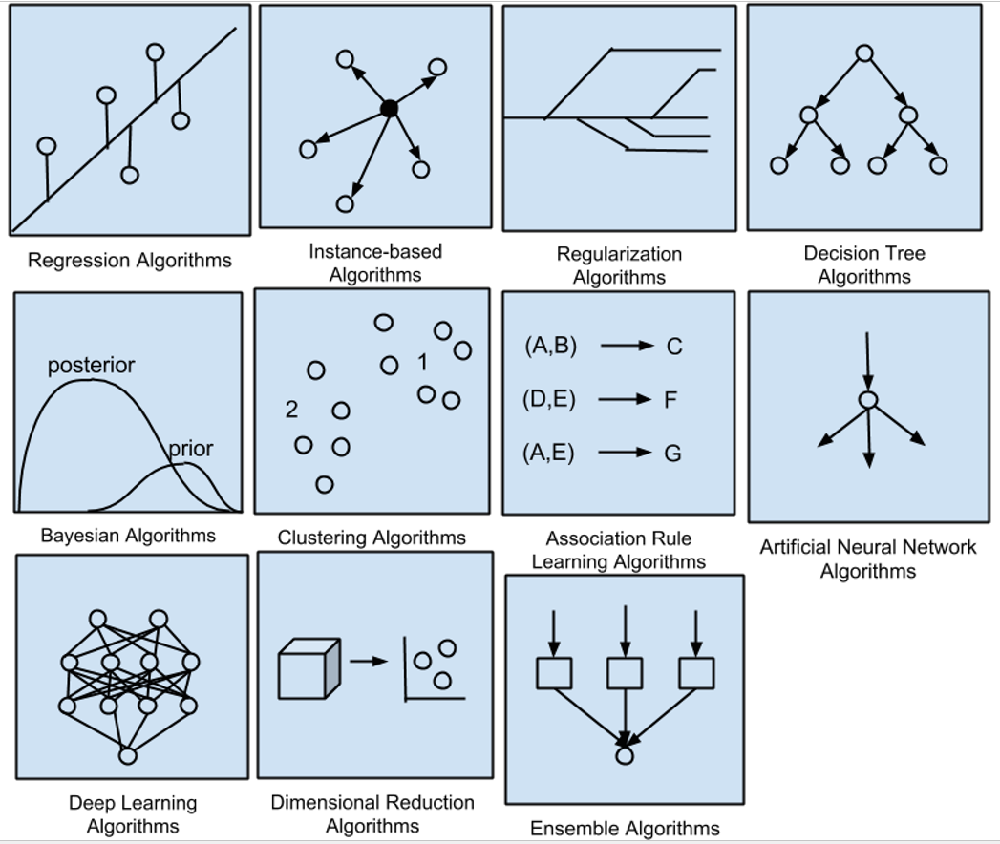

Machine Learning
Introduction
Reference：Machine Learning Mastery - A Tour of The Most Popular Machine Learning Algorithms
Algorithms can be categorized by learning styles and similarity.
Grouped by Learning Style
- Supervised Learning: training data + known label + predictions
- Regression (y is continuous) (discrepancy, k-fold cross validation)
- Classification (y is discretem) (confusion matrix, accuracy, AUC, information gain, F-score)
- Unsupervised Learning: not labeled + deduce structures
- Clustering
- K-Means
- Hierachical Clustering
- Dimensionality Reduction
- Factor Analysis
- Principle Component Analysis (PCA)
- Association Rule Learning
- Apriori Algorithm
- K-Nearest Neighbour (KNN)
- Clustering
- Semi-Supervised Learning: mixture of labeled and unlabelled data + learn structure & predict
- classification and regression
- make assumptions about how to model the unlabeled data
Machine Learning Algorithms Mind Map:

Grouped by Similarity
- Regression Algorithms
- Ordinary Least Squares Regression (OLSR)
- Linear Regression
- Logistic Regression
- Stepwise Regression
- Multivariate Adaptive Regression Splines (MARS)
- Locally Estimated Scatterplot Smoothing (LOESS)
- Similarity/Instance-based Algorithms
- compare new data and stored data using similarity to find best match
- k-Nearest Neighbour (kNN)
- Learning Vector Quantization (LVQ)
- Self-Organizing Map (SOM)
- Locally Weighted Learning (LWL)
- Support Vector Machines (SVM)
Feature Selection Algorithms
- exclude non-information or redundant variables and also reduce dimension
- Filter method: focuses on the relationship between a single feature and a target variable. It evaluates each feature (or an independent variable) before modeling and selects “important” variables.
- Wrapper method: evaluating the combinations of features’ subset (Back-foward method.)
- Embedded method: part of the machine learning model. Some model has built-in variable selection function such as lasso, and decision tree
Regularization Algorithms
- penalizes models based on their comlexity, favoring simple and generalizing models; usually not a complete model, but rather an add-on to other models
- Ridge Regression
- Least Absolute Shrinkage and Selection Operator (LASSO)
- Elastic Net
- Least-Angle Regression (LARS)
Decision Tree Algorithms
- Classification and Regression Tree (CART)
- Iterative Dichotomiser 3 (ID3)
- C4.5 and C5.0 (different versions of a powerful approach)
- Chi-squared Automatic Interaction Detection (CHAID)
- Decision Stump
- M5
- Conditional Decision Trees
- Random Forest
- Gradient Boosting Machines (GBM)
- XGBoost
Bayesian Algorithms
- prior & posterior, Bayes’ Theorem
- Naive Bayes
- Gaussion Naive Bayes
- Multinomial Naive Bayes
- Averaged One-Dependence Estimators (AODE)
- Bayesian Belief Network (BNN)
- Bayesian Network (BN)
Kernel Methods
- maps the input data to a higher order vector space where classification or regression problems are easier to solve
- Support Vector Machine (SVM)
- Radial Basis Function (RBF)
- Linear Discriminate Analysis (LDA)
Clustering Algorithms
- use the inherent structures to organize data for maximum commonality / find similar pattern
- k-Means
- k-Medians
- Expectation Maximisation (EM)
- Hierarchical Clustering
Association Rule Learning Algorithms
- extract rules that best explain relationships, find events occur together more often than one
- Apriori algorithm
- Eclat algorithm
Artificial Nerual Network Algorithms
- Perceptron
- Multilayer Perceptrons (MLP)
- Back-Propagation
- Stochastic Gradient Descent
- Hopfield Network
- Radial Basis Function Network (RBFN)
Deep Learning Algorithms
- Convolutional Neural Network (CNN)
- Recurrent Neural Networks (RNNs)
- Long Short-Term Memory Networks (LSTMs)
- Stacked Auto-Encoders
- Restricted Boltzmann Machine (RBN)
- Deep Boltzmann Machine (DBM)
- Deep Belief Networks (DBN)
Dimensionality Reduction Algorithms
- seek inherent structure, summarize or describe data using less information (visualization & continually used in supervised learning)
- Principle Component Analysis (PCA)
- Principle Component Regression (PCR)
- Partial Least Squares Regression (PLSR)
- Sammon Mapping
- Multidimensional Scaling (MDS)
- Projection Pursuit
- Linear Discriminant Analysis (LDA)
- Mixture Discriminant Analysis (MDA)
- Quadratic Discriminant Analysis (QDA)
- Flexible Discriminant Analysis (FDA)
- Exploratory Factor Analysis (EFA)
Ensemble Algorithms
- multiple weaker models, independently trained, combine predictions
- Bagging (Bootstapped Aggregation 自助法)
- Random Forest
- Boosting (XGBoost, AdaBoost)
- Weighted Average (Blending)
- Stacked Generalization (Stacking)
- Gradient Boosting Machines (GBM)
- Gradient Boosted Regression Trees (GBRT)
Other Machine Learning Algorithms
- specialty tasks in the process of machine learning
- Feature selection algorithms
- Algorithm accuracy evaluation
- Performance measures
- Optimization algorithms
- specialty subfields of machine learning
- Computational intelligence (evolutionary algorithms, etc.)
- Computer Vision (CV)
- Natural Language Processing (NLP)
- Recommender Systems
- Reinforcement Learning G0!
- Graphical Models
- specialty tasks in the process of machine learning


逻辑回归，从概率的角度看待回归
OLS: $\beta=(X’X)^{-1}X’Y$
Ridge: $\beta=(X’X+\lambda I)^{-1}X’Y$，
$\vert \hat{\beta}_{RR}\vert _2^2\le \vert \hat{\beta} _{OLS}\vert _2^2$
岭回归让beta更shrink了
Lasso: min { $\frac{1}{2}\Vert y-X\beta\Vert ^2 + \lambda \sum_i \vert \beta \vert_1$ }
$\vert\beta\vert_0=\sum_iI\lbrace\beta_i\ne0\rbrace$
$\vert\beta\vert_1=\sum_i\vert\beta_i\vert$
$\vert\beta\vert_2=\sum_i\beta_i^2$
朴素贝叶斯分类器假定特征条件独立来简化运算
决策树从上而下贪心方法进行递归构建，回归树估计出来的值永远在train_y的range之内，而线性回归i=可以在range之外。 相比线性回归，回归树可以更好地处理非线性和其他复杂关系；但如果数据明显呈线性，那么线性回归效果更好。 train的阶段很慢，计算量大；但是使用已训练好的模型去预测时很快。
SVM如何选择Kernal很重要
KNN的模型是整个数据集，k值选取很重要
在更高维空间中，欧氏距离的意义变小，应该使用其他距离度量
利用社交信息辅助分类：个体的邻居信息作为特征进入模型。 可以基于带权投票的近邻分类器（weighted-vote Relational-Neighbour, wvRN）。 迭代更新所有结点的类别属性概率值，若某结点的所有邻居都是标注结点则本身已经收敛不必迭代计算。
深度网络：前馈网络、递归网络、自组织网络 存在问题：依赖数据与标注，逻辑不足
知识推理，优化决策
AutoML自动搜索最优的网络结构和参数，元学习
未来：（类脑）新构架，胶囊网络，即插即用模块
The least squares regression and logistic regression are traditional statistical models. Both of them are highly interpretable. MARS is similar to neural networks and partial least squares (PLS) in the respect that they all use surrogate features instead of original predictors. They differ in how to create the surrogate features. PLS and neural networks use linear combinations of the original predictors as surrogate features. MARS creates two contrasted versions of a predictor by a truncation point. And LOESS is a non-parametric model, usually only used in visualization.
The key to similarity based algorithms is to find an appropriate distance metric for your data (e.g, biology distance)